건설기계설비기사 (2018-03-04 기출문제)
1과목: 재료역학
1. 그림과 같은 직사각형 단면의 목재 외팔보에 집중하중 P가 C점에 작용하고 있다. 목재의 허용압축응력을 8Mpa, 끝단 B점에서의 허용 처짐량을 23.9mm라고 할 때 허용압축응력과 허용 처짐량을 모두 고려하여 이 목재에 가할 수 있는 집중하중 P의 최대값은 약 몇 kN인가? (단, 목재의 탄성계수는 12GPa, 단면2차모멘트 1022 × 10-6m4, 단면계수는 4.601×10-3m3이다.)
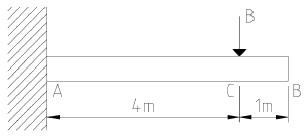
- 7.8
- 8.5
- 9.2
- 10.0
(정답률: 28%)

2. 최대 사용강도(σmax)=240MPa, 내경 1.5m, 두께 3mm의 강재 원통형 용기가 견딜 수 있는 최대 압력은 몇 kPa인가? (단 안전계수는 2이다.)
- 240
- 480
- 960
- 1920
(정답률: 25%)
3. 길이가 L+2a인 균일 단면 봉의 양단에 인장력P가 작용하고, 양 단에서의 거리가 a인 단면에 Q의 축 하중이 가하여 인장될 때 봉에 일어나는 변형량은 약 몇 cm인가? (단, L=60cm, a=30cm, P=10kN, Q=5kN, 단면적 A=4cm2, 탄성계수는 210GPa이다.)
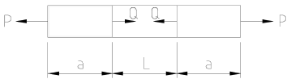
- 0.0107
- 0.0207
- 0.0307
- 0.0407
(정답률: 29%)
4. 그림과 같은 T형 단면을 갖는 돌출보의 끝에 집중하중 P=4.5kN이 작용한다. 단면A-A에서의 최대 전단응력은 약 몇 kPa인가? (단, 보의 단면2차 모멘트는 5313㎝4이고, 밑면에서 도심까지의 거리는 125mm이다.)
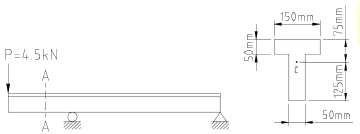
- 421
- 521
- 662
- 721
(정답률: 14%)
5. 비틀림 모멘트 T를 받고 있는 직경이 d인 원형축의 최대전단응력은?
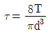
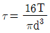
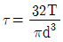
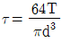
(정답률: 36%)
6. 다음 정사각형 단면(40mm x 40mm)을 가진 외팔보가 있다. a-a면 에서의 수직응력(σn)과 전단을력(τs)은 각각 몇 kPa인가?
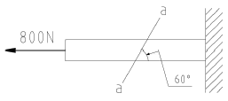
- σn = 693, τs = 400
- σn = 400, τs = 693
- σn = 375, τs = 217
- σn = 217, τs = 375
(정답률: 23%)
7. 코일스프링의 권수를 n, 코일의 지름을 D, 소선의 지름 d인 코일스프링의 전체처짐 δ는? (단, 이 코일에 작용하는 힘은 P, 가로탄성계수는 G이다.)(오류 신고가 접수된 문제입니다. 반드시 정답과 해설을 확인하시기 바랍니다.)
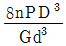
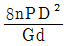
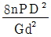
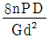
(정답률: 34%)
8. 그림과 같은 외팔보가 있다. 보의 굽힘에 대한 허용응력을 80MPa로 하고, 자유단 B로부터 보의 중앙점 C사이에 등분보하중 w를 작용시킬 때, w의 허용 최대값은 몇 kN/m인가? (단, 외팔보의 폭 × 높이는 5cm × 9cm이다.)
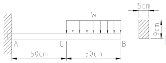
- 12.4
- 13.4
- 14.4
- 15.4
(정답률: 31%)
9. 그림과 같이 초기온도 20℃, 초기길이 19.95cm, 지름 5cm인 봉을 간격이 20cm인 두벽면사이에 넣고 봉의 온도를 220℃로 가열했을 때 봉에 발생되는 응력은 몇 MPa인가? (단, 탄성계수 E=210GPa이고, 균일 단면을 갖는 봉의 선팽창계수 α =1.2 ×10-5℃이다.)
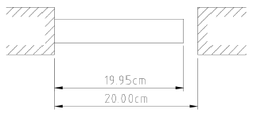
- 0
- 25.2
- 257
- 504
(정답률: 34%)
10. 다음 금속재료의 거동에 대한 일반적인 설명으로 틀린 것은?
- 재료에 가해지는 응력이 일정하더라고 오랜 시간이 경과하면 변형률이 증가할 수 있다.
- 재료의 거동이 탄성한도로 국한된다고 하더라도 반복하중이 작용하면 재료의 강도가 저하될 수 있다.
- 응력-변형률 곡선에서 하중을 가할 때와 제거할 때의 경로가 다르게 되는 현상을 히스테리스라 한다.
- 일반적으로 크리프는 고온보다 저온상태에서 더 잘 발생한다.
(정답률: 31%)
11. 그림과 같은 정삼각형 트러스의 B점에 수직으로, C점에 수평으로 하중이 작용하고 있을 때, 부재 AB에 작용하는 하중은?
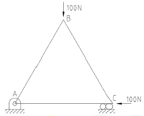
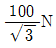
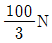
- 100√3N
- 50N
(정답률: 23%)
12. 직사각형 단면(폭×높이=12cm×5cm)이고, 길이 1m인 외팔보가 있다. 이 보의 허용 굽힘응력이 500MPa이라면 높이와 폭의 치수를 서로 바꾸면 받을수 있는 하중의 크기는 어떻게 변화하는가?
- 1.2배 증가
- 2.4배 증가
- 1.2배 감소
- 변화없다.
(정답률: 34%)
13. 다음 보의 자유단 A지점에서 발생하는 처짐은 얼마인가? (단, EI는 굽힘강성이다.)
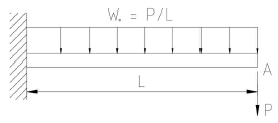
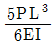
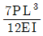
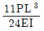
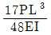
(정답률: 32%)
14. 지름 80mm의 원형단면의 중립축에 대한 관성모멘트는 약 몇 ㎜4인가?
- 0.5×106
- 1×106
- 2×106
- 4×106
(정답률: 31%)
15. σx =700MPa, σy =-300MPa 가 작용하는 평면응력 상태에서 최대 수직응력(σmax)과 최대 전단응력(τmax)은 각각 몇 MPa인가?
- σmax= 700, τmax= 300
- σmax= 600, τmax= 400
- σmax= 500, τmax= 700
- σmax= 700, τmax= 500
(정답률: 35%)
16. 다음 그림과 같이 집중하중 P를 받고 있는 고정 지지보가 있다. B점에서의 반력의 크기를 구하면 몇 kN인가?
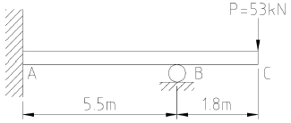
- 54.2
- 62.4
- 70.3
- 79.0
(정답률: 7%)
17. 양단이 힌지로 지지되어 있고 길이가 1m인 기둥이 있다. 단면이 30mm × 30mm인 정사각형이라면 임계하중은 약 몇 kN인가? (단, 탄성계수는 210GPa이고, Euler의 공식을 적용한다.)
- 133
- 137
- 140
- 146
(정답률: 34%)
18. 아래 그림과 같은 보에 대한 굽힘 모멘트 선도로 옳은 것은?
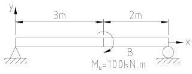
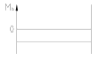
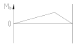
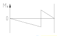
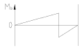
(정답률: 24%)
19. 지름 50mm의 알루미늄 봉에 100kN의 인장하중이 작용할 때 300mm의 표점거리에서 0.219mm의 신장이 측정되고, 지름은 0.01215mm만큼 감소되었다. 이 재료의 전단 탄성계수 G는 약 몇 GPa인가? (단, 알루미늄 재료는 탄성거동 범위 내에 있다.)
- 21.2
- 26.2
- 31.2
- 36.2
(정답률: 27%)
20. 길이가 L이며, 관성 모멘트가 Ip이고, 전단탄성계수가 G인 부재에 토크 T가 작용될 때 이 부재에 저장된 변형 에너지는?
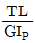
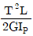
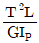
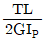
(정답률: 31%)
2과목: 기계열역학
21. 이상적인 복합 사이클 (사바테 사이클)에서 압축비는16, 최고압력비(압력상승비)는 2.3, 체절비는 1.6이고, 공기의 비열비는 1.4일 때 이 사이클의 효율은 약 몇%인가?
- 55.52
- 58.41
- 61.54
- 64.88
(정답률: 20%)
22. 열역학적 변화와 관련하여 다음 설명 중 옳지 않은 것은?
- 단위 질량당 물질의 온도를 1℃ 올리는데 필요한 열량을 비열이라 한다.
- 정압과정으로 시스템에 전달되는 열량은 엔트로피 변화량과 같다.
- 내부 에너지는 시스템의 질량에 비례하므로 종량적(extensive) 상태량이다.
- 어떤 고체가 액체로 변화할 때 융해(Melting)라고 하고, 어떤 고체가 기체로 바로 변화할 때 승화(Sublimation)라고 한다.
(정답률: 34%)
23. 랭킨 사이클에서 25℃, 0.01MPa 압력의 물 1kg을 5MPa 압력의 보일러로 공급한다. 이 때 펌프가 가역단열과정으로 작용한다고 가정할 경우 펌프가 한 일은 약 몇 kJ인가? (단, 물의 비체적은 0.001m3/kg이다.)
- 2.58
- 4.99
- 20.10
- 40.20
(정답률: 33%)
24. 온도가 각기 다른 액체 A(50℃), B(25℃), C(10℃)가 있다. A와 B를 동일질량으로 혼합하면 40℃로 되고, A와 C를 동일질량으로 혼합하면 30℃로 된다. B와 C를 동일 질량으로 혼합할 때는 몇 ℃로 되겠는가?
- 16.0℃
- 18.4℃
- 20.0℃
- 22.5℃
(정답률: 29%)
25. 이상기체 공기가 안지름 0.1m인 관을 통하여 0.2m/s로 흐르고 있다. 공기의 온도는 20℃, 압력은 100kPa, 기체상수는 0.287kJ/(kg∙K)라면 질량유량은 약 몇 kg/s인가?
- 0.0019
- 0.0099
- 0.0119
- 0.0199
(정답률: 32%)
26. 어떤 기체가 5kJ의 열을 받고 0.18kN·m의 일을 외부로 하였다. 이때의 내부에너지의 변화량은?
- 3.24kJ
- 4.82kJ
- 5.18kJ
- 6.14kJ
(정답률: 35%)
27. 이상기체가 정압과정으로 dT만큼 온도가 변하였을 때 1kg당 변화된 열량 Q는? (단, Cv는 정적비열, Cp는 정압비열, k는 비열비를 나타낸다.)(오류 신고가 접수된 문제입니다. 반드시 정답과 해설을 확인하시기 바랍니다.)
- Q=CvdT
- Q=K2CvdT
- Q=CpdT
- Q=kCvdT
(정답률: 32%)
28. 이상적인 오토사이클에서 단열압축되기 전 공기가 101.3kPa, 21℃이며, 압축비 7로 운전할 때 이 사이클의 효율은 약 몇 %인가? (단 공기의 비열비는 1.4이다.)
- 62%
- 54%
- 46%
- 42%
(정답률: 31%)
29. 단위질량의 이상기체가 정적과정 하에서 온도가 T1에서 T2로 변하였고, 압력도 P1에서 P2로 변하였다면, 엔트로피 변화량ΔS는? (단, Cv와 Cp는 각각 정적비열과 정압비열이다.)
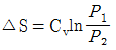
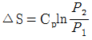
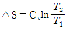
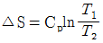
(정답률: 28%)
30. 520K의 고온 열원으로부터 18.4kJ 열량을 받고 273K의 저온 열원에 13kJ의 열량 방출하는 열기관에 대하여 옳은 설명은?
- Clausius 적분값은 –0.0122kJ/K이고, 가역 과정이다.
- Clausius 적분값은 –0.0122kJ/K이고, 비가역 과정이다.
- Clausius 적분값은 +0.0122kJ/K이고, 가역 과정이다.
- Clausius 적분값은 +0.0122kJ/K이고, 비가역 과정이다.
(정답률: 28%)
31. 다음 4가지 경우에 ( ) 안의 물질이 보유한 엔트로피가 증가한 경우는?
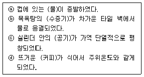
- ⓐ
- ⓑ
- ⓒ
- ⓓ
(정답률: 33%)
32. 다음 중 강성적(강도성, intensive) 상태량이 아닌 것은?
- 압력
- 온도
- 엔탈피
- 비체적
(정답률: 34%)
33. 그림과 같이 온도(T)-엔트로피(S)로 표시된 이상적인 랭킨사이클에서 각 상태의 엔탈피(h)가 다음과 같다면, 이 사이클의 효율은 약 몇 %인다? (단, h1=30kJ/kg, h2=31kJ/kg, h3=274kJ/kg, h4=668kJ/kg, h5=764kJ/kg, h6=478kJ/kg)
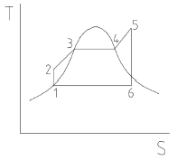
- 39
- 42
- 53
- 58
(정답률: 33%)
34. 공기압축기에서 입구 공기의 온도와 압력은 각각 27℃, 100kPa이고, 체적유량은 0.01이다. 추구에서 압력이 400kPa이고, 이 압축기의 등엔트로피 효율이 0.8일 때, 압축기의 소요 동력은 약 몇 kW인가? (단, 공기의 정압비열과 기체상수는 각각 1kJ/(kg·k), 0.287kJ/(kg·k)이고, 비열비는 1.4이다.)
- 0.9
- 1.7
- 2.1
- 3.8
(정답률: 14%)
35. 엔트로피(s) 변화 등과 같은 직접 측정할 수 없는 양들을 압력(P), 비체적(v), 온도(T)와 같은 측정 가능한 상태량으로 나타내는 Maxwell 관계식과 관련하여 다음 중 틀린 것은?
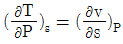
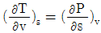
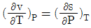
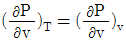
(정답률: 20%)
36. 저온실로부터 46.4kW의 열을 흡수할 때 10kW의 동력을 필요로 하는 냉동기가 있다면, 이 냉동기의 성능계수는?
- 4.64
- 5.65
- 7.49
- 8.82
(정답률: 34%)
37. 대기압이 100kPa 일 때, 계기 압력이 5.23MPa인 증기의 절대 압력은 약 몇 MPa인가?
- 3.02
- 4.12
- 5.33
- 6.43
(정답률: 37%)
38. 증기터빈 발전소에서 터빈 입구의 증기 엔탈피는 출구의 엔탈피보다 136kJ/kg 높고, 터빈에서의 열손실은 10kJ/kg이다. 증기속도는 터빈 입구에서 10m/s일 때 이 터빈에서 발생시킬 수 있는 일은 약 몇 kJ/kg인가?
- 10
- 90
- 120
- 140
(정답률: 24%)
39. 압력 2MPa, 온도 300℃의 수증기가 20m/s속도로 증기터빈으로 들어간다. 터빈 출구에서 수증기 압력이 100kPa, 속도는 100m/s이다. 가역단열과정으로 가정 시, 터빈을 통과 하는 수증기 1kg 당 출력일은 약 몇 kJ/kg인가? (단, 수증기표로부터 2MPa, 300℃에서 비엔탈피틑 3023.5kJ/kg, 비엔트로피는 6.7663kJ/(kg·K)이고, 출구에서의 비엔탈피 및 비엔트로피는 아래 표와 같다.)
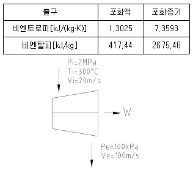
- 1534
- 564.3
- 153.4
- 764.5
(정답률: 22%)
40. 초기 압력 100kPa, 초기 체적 0.1m3인 기체를 버너로 가열하여 기체 체적이 정압과정으로 0.5m3이 되었다면 이 과정 동안 시스템이 외부에 한 일은 약 몇 kJ인가?
- 10
- 20
- 30
- 40
(정답률: 36%)
3과목: 기계유체역학
41. 유체(비중량 10N/m3)가 중량유량 6.28N/s 지름 40cm인 관을 흐르고 있다. 이 관내부의 평균 유속은 약 몇 m/s인가?
- 50.0
- 5.0
- 0.2
- 0.8
(정답률: 34%)
42. 어느 물리법칙이 F(a, V, v, L)=0과 같은 식으로 주어졌다. 이 식을 무차원수의 함수로 표시하고자 할 때 이에 관계되는 무차원수는 몇 개인가? (단, a, V, v, L은 각각 가속도, 속도, 동점성계수, 길이이다.)
- 4
- 3
- 2
- 1
(정답률: 28%)
43. 다음과 같이 유체의 정의를 설명할 때 괄호 속에 가장 알맞은 용어는 무엇인가?
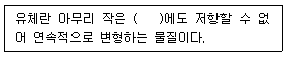
- 수직응력
- 중력
- 압력
- 전단응력
(정답률: 33%)
44. 안지름이 20cm, 높이가 60cm인 수직 원통형 용기에 밀도 850kg/m3 액체가 밑면으로부터 50cm 높이만큼 채워져 있다. 원통형 용기와 액체가 일정한 각속도로 회전할 때, 액체가 넘치기 시작하는 각속도는 약 몇 rpm인가?
- 134
- 189
- 276
- 392
(정답률: 19%)
45. 1/20로 축소한 모형 수력 발전 땜과, 역학적으로 상사한 실제 수력 발전 댐이 생성할 수 있는 동력비(모형 : 실제)는 약 얼마인가?
- 1 : 1800
- 1 : 8000
- 1 : 35800
- 1 : 160000
(정답률: 21%)
46. 그림에서 압력차가(Px-Py)는 약 몇 kPa인가?
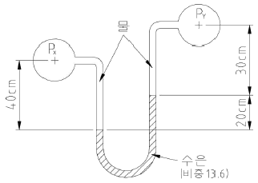
- 25.67
- 2.57
- 51.34
- 5.13
(정답률: 36%)
47. 수평면과 60℃ 기울어진 벽에 지름이 4m인 원형창이 있다. 창의 중심으로부터 5m 높이에 물이 차있을 때 창에 작용하는 합력의 작용점과 원형창의 중심(도심)과의 거리(C)는 양 몇 m인가? (단, 원의 2차 면적 모멘트는 πR4/4이고, 여기서 R은 원의 반지름 이다.)
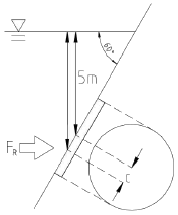
- 0.0866
- 0.173
- 0.866
- 1.73
(정답률: 21%)
48. 지름 0.1mm, 비중 2.3인 작은 모래알이 호스 바닥으로 가라앉을 때, 잔잔한 물속에서 가라앉는 속도는 약 몇 ㎜/s인가? (단, 물의 점성계수는 1.12×10-3N·s/m2이다.)
- 6.32
- 4.96
- 3.17
- 2.24
(정답률: 14%)
49. 지름 20cm, 속도 1m/s인 물 제트가 그림과 같이 넓은 평판에 60° 경사하여 충돌한다. 분류가 평판에 작용하는 수직방향 힘 FN은 약 몇 N인가? (단, 중력에 대한 영향은 고려하지 않는다.)
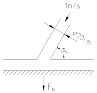
- 27.2
- 31.4
- 2.72
- 3.14
(정답률: 30%)
50. 공기로 채워진 0.189m3의 오일 드럼통을 사용하여 잠수부가 해저 바닥으로부터 오래된 배의 닻을 끌어올리려고 한다. 바닷물 속에서 닻을 들어 올리는데 필요한 힘은 1780N이고, 공기 중에서 드럼통을 들어 올리는데 필요한 힘은 222N이다. 공기로 채워진 드럼통을 닻에 연결한 후 잠수부가 이 닻을 끌어올리는 데 필요한 최소 힘은 약 몇 N인가? (단, 바닷물의 비중은 1.025이다.)
- 72.8
- 83.4
- 92.5
- 103.5
(정답률: 18%)
51. 평균 반지름이 R인 얇은 막 형태의 작은 비눗방울의 내부 압력을 P1, 외부 압력을 P0라고 할 경우, 표면 장력(σ)에 의한 압력차(|Pi-Po|)는?
- σ/4R
- σ/R
- 4σ/R
- 2σ/R
(정답률: 20%)
52. (x, y)좌표계의 비회전 2차원 유동장에서 속도 포텐셜(potential) ø는 ø=2x2y로 주어졌다. 이때 점(3,2)인 곳에서 속도 백터는? (단, 속도포텐셜 ø는
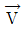
≡ ∇ø=gradø로 정의된다.)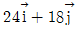
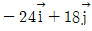
(정답률: 30%)
53. 연직하방으로 내려가는 물제트에서 높이 10m인 곳에서 속도는 20m/s였다. 높이 5m인 곳에서의 물의 속도는 약 몇 m/s인가?
- 29.45
- 26.34
- 23.88
- 22.32
(정답률: 26%)
54. 안지름 100mm인 파이프 안에 2.3m3/min의 유량으로 물이 흐르고 있다. 관 길이가 15m라고 할 때 이 사이에서 나타나는 손실수두는 약 몇 m인가? (단, 관마찰계수는 0.01로 한다.)
- 0.92
- 1.82
- 2.13
- 1.22
(정답률: 31%)
55. 원관 내부의 흐름이 층류 정상 유동일 때 유체의 전단응력 분포에 대한 설명으로 알맞은 것은?
- 중심축에서 0이고, 반지름 방향 거리에 따라 선형적으로 증가한다.
- 관 벽에서 0이고, 중심축까지 선형적으로 증가한다.
- 단면에서 중심축을 기준으로 포물선 분포를 가진다.
- 단면적 전체에서 일정하다.
(정답률: 28%)
56. 비압축성 유체의 2차원 유동 속도성분이 u=x2, v=x2-2xyt이다. 시간(t)이 2일 때, (x,y)=(2,-1)에서 x방향 가속도(ax)는 약 얼마인가? (단, u,v는 각각 x,y방향 속도성분이고, 단위는 모두 표준단위이다.)
- 32
- 34
- 64
- 68
(정답률: 10%)
57. 유체 계측과 관련하여 크게 유체의 국소속도를 측정하는 것과 체적유량을 측정하는 것으로 구분할 때 다음 중 유체의 국소속도를 측정하는 계측기는?
- 벤투리미터
- 얇은 판 오리피스
- 열선 속도계
- 로터미터
(정답률: 23%)
58. 반지름 R인 파이프 내에 점도 μ인 유체가 완전발달 층류유동으로 흐르고 있다. 길이 L을 흐르는데 압력 손실이 Δp만큼 발생했을 때, 파이프 벽면에서의 평균전단응력은 얼마인가?
(정답률: 21%)
59. 경계층(boundary layer)에 관한 설명 중 트린 것은?
- 경계층 바깥의 흐름은 포텐셜 흐름에 가깝다.
- 균일 속도가 크고, 유체의 점성이 클수록 경계층의 두께는 얇아진다.
- 경계층 내에서는 점성의 영향이 크다.
- 경계층은 평판 선단으로부터 하류로 갈수록 두꺼워진다.
(정답률: 27%)
60. 수력기울기선(Hydraulic Grade Line; HGL)이 관보다 아래에 있는 곳에서의 압력은?
- 완전 진공이다.
- 대기압보다 낮다.
- 대기압과 같다.
- 대기압보다 높다.
(정답률: 28%)
4과목: 유체기계 및 유압기기
61. 유량은 20m3/min , 양정은 50m, 펌프회전수는 1800rpm인 2단 편흡입 원심펌프의 비속도(specific speed, [m3/min, m, rpm]는 약 얼마인가?
- 303
- 428
- 720
- 1048
(정답률: 45%)
62. 다음 중 풍차의 축 방향이 다른 종류는?
- 네델란드형
- 다리우스형
- 패들형
- 사보니우스형
(정답률: 48%)
63. 터보형 펌프의 분류에 속하지 않는 것은?
- 원심식
- 사류식
- 왕복식
- 축류식
(정답률: 69%)
64. 유체 커플링의 구조에 대한 설명 중 옳지 않은 것은?
- 유체 커플링의 일반적인 구조 요소는 입력축에 펌프, 출력축에 터빈을 설치한다.
- 펌프와 터빈의 회전차는 서로 맞대서 케이싱 내에 다수의 깃이 반지름 방향으로 달려 있다.
- 입력축을 회전하면 그 축에 달린 펌프의 회전차가 회전하며 액체는 임펠러로부터 유출하여 출력축에 달린 터빈의 러너에 유입하여 출력축을 회전시킨다.
- 펌프와 터빈으로 두 개의 별도 회로로 구성되어 있으므로 일정시간 작동 후 펌프가 정지하더라도 터빈은 독자적으로 작동할 수 있다.
(정답률: 55%)
65. 반동수차 중 하나로 프로펠러 수차와 비슷하나 유량변화가 심한 곳에 사용할 수 있도록 가동익을 설치하여, 부분부하에 대하여 높은 효율을 얻을 수 있는 수차는?
- 카플란 수차
- 펠턴 수차
- 지라르 수차
- 프란시스 수차
(정답률: 61%)
66. 루츠형 진공 펌프가 동일한 압력 사용 범위에서 다른 진공 펌프와 비교하여 가지는 장점이 아닌 것은?
- 고속 회전이 가능하다.
- 넓은 압력 범위에서도 양호한 배기성능이 발휘된다.
- 고압으로 갈수록 모터 용량의 상승폭이 크지 않아 고압에서의 작동에 유리하다.
- 실린더 안에 오일을 사용하지 않음으로 소요 동력이 적다.
(정답률: 43%)
67. 수차의 수격현상에 대한 설명으로 옳지 않은 것은?
- 기동이나 정지 또는 부하가 갑자기 변화할 경우 유입수량이 급변함에 따라 수격현상이 발생하게 된다.
- 수격현상은 진동의 원인이 되고 경우에 따라서는 수관을 파괴시키기도 한다.
- 수차 케이싱에 압력조절기를 설치하여 부하가 급변할 경우 방출유량을 조절하여 수격현상을 방지한다.
- 수차에 서지탱크를 설치하여 관내 압력변화를 크게 하여 수격현상을 방지할 수 있다.
(정답률: 65%)
68. 물이 수차의 회전차를 흐르는 사이에 물의 압력에너지와 속도에너지는 감소되고 그 반동으로 회전차를 구동하는 수차는?
- 중력 수차
- 펠턴 수차
- 충격 수차
- 프란시스 수차
(정답률: 53%)
69. 다음 중 벌류트 펌프(volute pump)의 구성 요소가 아닌 것은?
- 임펠러
- 안내깃
- 와류실
- 와실
(정답률: 48%)
70. 다음 중 원심 펌프에서 축추력의 평형을 이루는 방법으로 거리가 먼 것은?
- 스러스트 베어링의 사용
- 그랜드 패킹 사용
- 회전차 후면에 이면깃 사용
- 밸런스 디스크 사용
(정답률: 52%)
71. 다음 중 기어 모터의 특성에 관한 설명으로 가장 거리가 먼 것은?
- 정회전, 역회전이 가능하다.
- 일반적으로 평기어를 사용한다.
- 비교적 소형이며 구조가 간단하기 때문에 값이 싸다.
- 누설량이 적고 토크 변동이 작아서 건설기계에 많이 이용된다.
(정답률: 53%)
72. 그림과 같은 유압회로의 명칭으로 옳은 것은?
- 브레이크 회로
- 압력 설정 회로
- 최대압력 제한 회로
- 임의 위치 로크 회로
(정답률: 59%)
73. 온도 상승에 의하여 윤활유의 점도가 낮아질 때 나타나는 현상이 아닌 것은?
- 누설이 잘된다.
- 기포의 제거가 어렵다.
- 마찰 부분의 마모가 증대된다.
- 펌프의 용적 효율이 저하된다.
(정답률: 55%)
74. 다음 중 어큐뮬레이터 용도에 대한 설명으로 틀린 것은?
- 에너지 축적용
- 펌프 맥동 흡수용
- 충격압력의 완충용
- 유압유 냉각 및 가열용
(정답률: 70%)
75. 다음 중 유압장치의 운동부분에 사용되는 실(seal)의 일반적인 명칭은?
- 심레스(seamless)
- 개스킷(gasket)
- 패킹(packing)
- 필터(filter)
(정답률: 65%)
76. 다음 기호에 대한 명칭은?
- 비례전자식 릴리프 밸브
- 릴리프 붙이 시퀸스 밸브
- 파일럿 작동형 감압 밸브
- 파일럿 작동형 릴리프 밸브
(정답률: 45%)
77. 부하가 급격히 변화하였을 때 그 자중이나 관성력 때문에 소정의 제어를 못하게 된 경우 배압을 걸어주어 자유낙하를 방지하는 역할을 하는 유압제어 밸브로 체크밸브가 내장된 것은?
- 카운터밸런스 밸브
- 릴리프 밸브
- 스로틀 밸브
- 감압 밸브
(정답률: 73%)
78. 크래킹 압력(cracking pressure)에 관한 설명으로 가장 적합한 것은?
- 파일럿 관로에 작용시키는 압력
- 압력 제어 밸브 등에서 조절되는 압력
- 체크 밸브, 릴리프 밸브 등에서 압력이 상승하고 밸브가 열리기 시작하여 어느 일정한 흐름의 양이 인정되는 압력
- 체크 밸브, 릴리프 밸브 등의 입구 쪽 압력이 강하고, 밸브가 닫히기 시작하여 밸브의 누설량이 어느 규정의 양까지 감소했을 때의 압력
(정답률: 66%)
79. 미터-아웃(meter-out) 유량 제어 시스템에 대한 설명으로 옳은 것은?
- 실린더로 유입하는 유량을 제어한다.
- 실린더의 출구 관로에 위치하여 실린더로부터 유출되는 유량을 제어한다.
- 부하가 급격히 감소되더라도 피스톤이 급진되지 않도록 제어한다.
- 순간적으로 고압을 필요로 할 때 사용한다.
(정답률: 70%)
80. 펌프의 압력이 50Pa, 토출유량은 40m3/min 인 레이디얼 피스톤 펌프의 축동력은 약 몇 W인가? (단, 펌프의 전효율은 0.85이다.)
- 3921
- 39.21
- 2352
- 23.52
(정답률: 59%)
5과목: 건설기계일반 및 플랜트배관
81. 다음 중 도로포장을 위한 다짐작업에 주로 쓰이는 건설기계는?
- 롤러
- 로더
- 지게차
- 덤프 트럭
(정답률: 76%)
82. 자주식 로드 롤러(road roller)를 축의 배열과 바퀴의 배열로 구분할 때 머캐덤(Macadam)롤러에 해당되는 것은?
- 1축 1륜
- 2축 2륜
- 2축 3륜
- 3축 3륜
(정답률: 63%)
83. 탄소강과 철강의 5대 원소가 아닌 것은?
- C
- Si
- Mn
- Mg
(정답률: 58%)
84. 불도저의 시간당 작업량 계산에 필요한 사이클 타임Cm(min)은 다음 중 어느 것인가? (단, ℓ=운반거리(m), v1 =전진속도(m/min), v2 =휴진속도(m/min), t=기어변속시간(min)이다.)
(정답률: 66%)
85. 다음 중 전압식 롤러에 해당하지 않는 것은?
- 머캐덤 롤러(Macadam Roller)
- 타이어 롤러(Tire Roller)
- 탬핑 롤러(Tamping Roller)
- 탬퍼(Tamper)
(정답률: 69%)
86. 난방과 온수공급에 쓰이는 대규모 보일러설비의 주요 부분 중 포화증기를 과열증기로 가열시키는 장치의 이름은 무엇인가?
- 과열기
- 절탄기
- 통풍장치
- 공기예열기
(정답률: 73%)
87. 일반적으로 지게차 조향장치는 어떠한 방식을 사용하는가?
- 전륜 조향식에 유압식으로 제어
- 후륜 조향식에 유압식으로 제어
- 전륜 조향식에 공압식으로 제어
- 후륜 조향식에 공압식으로 제어
(정답률: 71%)
88. 굴삭기의 시간당 작업량[Q, m3/h]을 산정하는 식으로 옳은 것은? (단, q는 버킷 용량[m3], f는 체적환산계수, E는 작업효율, k는 버킷 계수, cm은 1회 사이클 시간[초] 이다.
(정답률: 69%)
89. 모터그레이더의 동력전달 순서로 옳은 것은?
- 클러치 –탠덤드라이브 –피니언베벨기어 –감속기어 –변속기 - 휠
- 기관 –클러치 –감속기어 –변속기 –탠덤드라이브 –피니언베벨기어 - 휠
- 기관 –클러치 –변속기 –감속기어 –피니언베벨기어 –탠덤드라이브 - 휠
- 감속기어 –클러치 탠덤드라이브 –피니언베벨기어 –변속기 휠
(정답률: 60%)
90. 유압식 크로울러 드릴 작업 시 주의사항으로 옳지 않은 것은?
- 천공 방법을 확인한다.
- 천공작업장의 수평상태를 확인한다.
- 천공작업 중 암석가루가 밖으로 잘 나오는지 확인한다.
- 천공작업 시 다른 크로울러 드릴 장비가 이미 천공한 구멍을 다시 천공해도 된다.
(정답률: 70%)
91. 다음 배관 이름에 관한 설명으로 틀린 것은?
- 유니언은 기계적 강도가 크다.
- 부싱은 이경 소켓에 비해 강도가 약하다.
- 부싱은 한쪽은 암나사, 다른 쪽은 수나사로 되어 있다.
- 유니언은 소구경관에 사용하고, 플랜지는 대구경관에 사용한다.
(정답률: 44%)
92. 증기온도 102℃, 실내온도 21℃로 증기난방을 하고자 할 때 방열면적 1m2 당 표준방열량은 몇kcal/h인가?
- 450
- 550
- 650
- 750
(정답률: 34%)
93. 배관용 탄소강관 또는 아크용접 탄소강관에 콜타르에나멜이나 폴리에틸렌 등으로 피복한 관으로 수도, 하수도 등의 매설 배관에 주로 사용되는 강관은?
- 배관용 합금강 관
- 수도용 아연도금 강관
- 압력 배관용 탄소강관
- 상수도용 도복장 강관
(정답률: 57%)
94. 다음 중 배관의 끝을 막을 때 사용하는 부속은?
- 플러그
- 유니언
- 부싱
- 소켓
(정답률: 57%)
95. 동력 나사절삭기의 종류가 아닌 것은?
- 호브식
- 로터리식
- 오스터식
- 다이헤드식
(정답률: 49%)
96. 다음중 스트레이너를 방치했을 때 발생하는 현상 중 가장 큰 문제점은?
- 진동이나 발열
- 유체의 흐름장애
- 불완전 연소나 폭발
- 보일러부식 및 슬러지 생성
(정답률: 54%)
97. 방열기의환수구나 종기배관의 말단에 설치하고 응축수와 증기를 분리하여 자동으로 환수관에 배출시키고, 증기를 통과하지 않게 하는 장치는?
- 신축이음
- 증기트랩
- 감압밸브
- 스트레이너
(정답률: 70%)
98. 일반 배관용 스테인리스강관의 종류로 옳은 것은?
- STS 304 TPD, STS 316 TPD
- STS 304 TPD, STS 415 TPD
- STS 316 TPD, STS 404 TPD
- STS 404 TPD, STS 415 TPD
(정답률: 51%)
99. 배수 직수관, 배수 횡주관 및 기구 배수관의 완료 지점에서 각 층마다 분류하여 배관의 최상부로 물을 넣어 이상여부를 확인하는 시험은?
- 수압시험
- 통수시험
- 만수시험
- 기압시험
(정답률: 56%)
100. 관 접합부의 이음쇠 및 부속류 분해 또는 이음 시 사용되는 공구는?
- 파이프 커터
- 파이프 리머
- 파이프 바이스
- 파이프 렌치
(정답률: 55%)
허용압축응력을 고려할 때, 목재에 작용하는 하중 P가 일정하다면, 목재의 응력은 P/A가 되며, 여기서 A는 목재의 단면적이다. 따라서, P/A가 8MPa보다 작아야 한다.
끝단 B점에서의 허용 처짐량을 고려할 때, 목재의 처짐은 다음과 같이 계산된다.
δ = PL3 / 48EI
여기서 L은 목재의 길이, E는 목재의 탄성계수, I는 목재의 단면2차모멘트이다.
따라서, P가 일정하다면, 목재의 처짐은 P에 비례하므로, P가 23.9mm를 초과하지 않도록 해야 한다.
이제, 이 두 가지 조건을 모두 고려하여 최대 하중을 구해보자.
먼저, 허용압축응력을 고려할 때,
P/A ≤ 8MPa
여기서 A는 목재의 단면적이므로,
A = bh = (60mm)(80mm) = 4800mm2 = 4.8×10-3m2
따라서,
P ≤ 8MPa × 4.8×10-3m2 = 38.4kN
다음으로, 허용 처짐량을 고려할 때,
δ = PL3 / 48EI ≤ 23.9mm
여기서 L, E, I는 문제에서 주어졌으므로,
P ≤ 23.9mm × 48EI / L3
= 23.9mm × 48 × 12GPa × 1022 × 10-6m4 / (2.4m)3
= 9.2kN
따라서, 허용압축응력과 허용 처짐량을 모두 고려하여 이 목재에 가할 수 있는 집중하중 P의 최대값은 9.2kN이다.